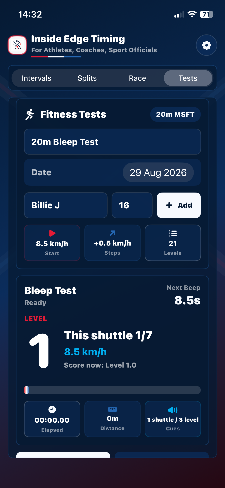
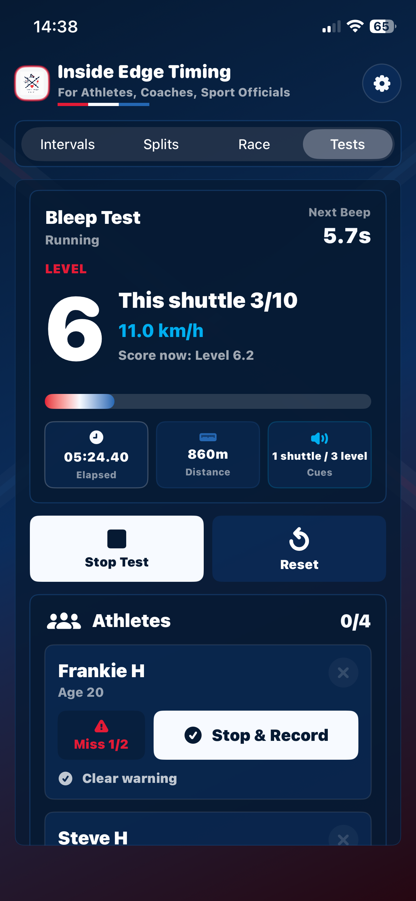
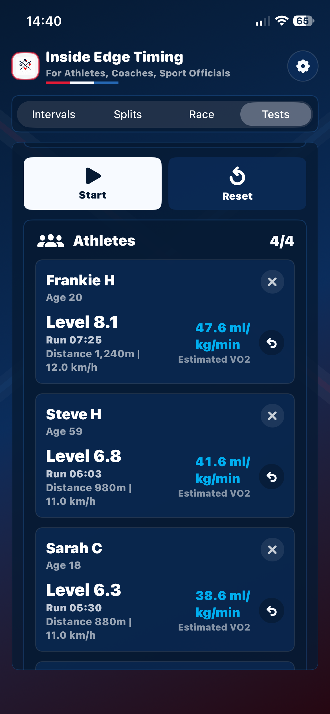
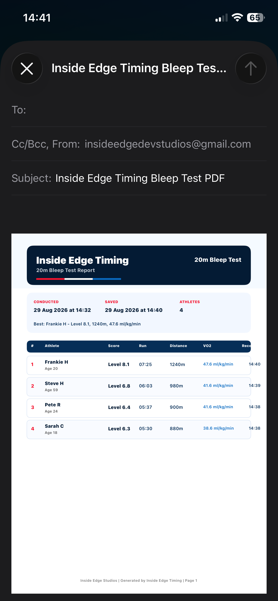

Protocol built in
No separate audio track or manual level chart.
The app calculates all 21 levels and 20-metre shuttle timings, gives one cue per shuttle and a triple cue at each new level, and keeps the display awake while the test runs.
20m multistage fitness test
Inside Edge Timing now runs the 20-metre multistage fitness test (20m MSFT), often known as the bleep or beep test. The protocol originates from the work of Luc Léger and colleagues and is widely used to assess aerobic fitness through progressively faster shuttle running.
Set two lines 20 metres apart, add up to four athletes with their ages, then start the test. Athletes reach the opposite line at each single cue. A triple cue announces a new level; speed begins at 8.5 km/h and rises by 0.5 km/h with every level.




Protocol built in
The app calculates all 21 levels and 20-metre shuttle timings, gives one cue per shuttle and a triple cue at each new level, and keeps the display awake while the test runs.
Multiple athletes
Manage up to four athletes together. Mark a first miss as a warning; a second miss records the athlete at the last successfully completed shuttle. A dedicated Stop & Record control remains available for coach-led decisions.
Age-aware context
For athletes aged 8–19, the app uses the Léger age-aware equation. Adult results use the Léger speed-based estimate. Every report identifies the method used and presents VO2 as an estimate, alongside the directly observed test score.
Record and report
Fitness Test History keeps completed sessions on the device. Produce a presentation-ready PDF report, a CSV file for analysis and record keeping, or quick text for messages and notes; use the iOS share sheet to print, save or send.